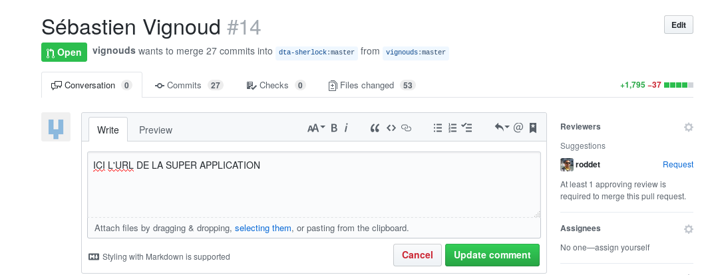

Déploiement Heroku
Heroku est une plateforme de déploiement d'applications.
Branche production
- Créer une branche de production
git checkout -b production
Configuration déploiement Heroku
- Modifier le fichier
pom.xmldans la rubrique<build>.
<build>
<finalName>paie</finalName>
<pluginManagement>
<plugins>
<plugin>
<artifactId>maven-war-plugin</artifactId>
<configuration>
<failOnMissingWebXml>false</failOnMissingWebXml>
</configuration>
</plugin>
</plugins>
</pluginManagement>
<!-- PARTIE A AJOUTER -->
<plugins>
<plugin>
<groupId>org.apache.maven.plugins</groupId>
<artifactId>maven-dependency-plugin</artifactId>
<version>3.0.2</version>
<executions>
<execution>
<phase>package</phase>
<goals>
<goal>copy</goal>
</goals>
<configuration>
<artifactItems>
<artifactItem>
<groupId>com.github.jsimone</groupId>
<artifactId>webapp-runner</artifactId>
<version>8.5.27.0</version>
<destFileName>webapp-runner.jar</destFileName>
</artifactItem>
</artifactItems>
</configuration>
</execution>
</executions>
</plugin>
</plugins>
</build>
- Modifier le fichier
pom.xmlpour ajouter la dépendance vers le driverpostgresql:
<dependency>
<groupId>org.postgresql</groupId>
<artifactId>postgresql</artifactId>
<version>42.1.1</version>
<scope>runtime</scope>
</dependency>
Supprimer les dépendances vers les drivers
MYSQL,MariadDBetH2, s'il existent.Ajouter un fichier
Procfileà la racine du dépôt Git avec le contenu suivant :
web: java $JAVA_OPTS -jar target/dependency/webapp-runner.jar --port $PORT target/*.war
- Créer une nouvelle source de données
dev.paie.config.HerokuDBConfigcomme suit :
package dev.paie.config;
import org.springframework.context.annotation.Bean;
import org.springframework.context.annotation.Configuration;
import org.springframework.jdbc.datasource.DriverManagerDataSource;
import javax.sql.DataSource;
import java.net.URI;
import java.net.URISyntaxException;
@Configuration
public class HerokuDBConfig {
@Bean
public DataSource dataSource() throws URISyntaxException {
URI dbUri = new URI(System.getenv("DATABASE_URL"));
String username = dbUri.getUserInfo().split(":")[0];
String password = dbUri.getUserInfo().split(":")[1];
String dbUrl = "jdbc:postgresql://" + dbUri.getHost() + ':' + dbUri.getPort() + dbUri.getPath() + "?sslmode=require";
DriverManagerDataSource dataSource = new DriverManagerDataSource();
dataSource.setUrl(dbUrl);
dataSource.setUsername(username);
dataSource.setPassword(password);
return dataSource;
}
}
Configurer votre application pour que ce soit cette source de données qui soit prise en compte au démarrage de l'application Web.
Commiter et Pusher la nouvelle branche sur votre dépôt
Configuration déploiement Heroku
- Aller sur le site d'Heroku : https://www.heroku.com/ et Cliquer sur
Signup.

- Remplir le formulaire d'inscription.
- Cliquer sur
Create new App.

- Donner un nom unique à l'application : exemple
valentin-sgp.

- Cliquer sur Github, se connecter à Github

- Sélectionner votre projet (version fork) :
sirh-gestion-paie

- Activer le déploiement automatique en cliquant sur
Enable Automatic Deployssur la branche production.

- Cliquer sur
Deploy Branchpour la branche production.

- Pour visualiser les logs, cliquer sur
More > View logs.
Les données sont stockées dans une base PostgreSQL automatiquement configurée par Heroku.
Les informations de connexion sont consultables dans la rubrique Resource (en cliquant sur la base de données).

Si vous souhaitez visualiser le contenu de la base de données distante, vous pouvez installer le client PgAdmin.
Mise à jour pull-request
- Compléter la pull request avec l'URL de l'application Heroku.

Mise à jour de la branche production
- Pensez à faire un
mergede la brancheproductionà chaque fois que vous souhaitez mettre à disposition votre application.